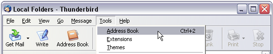
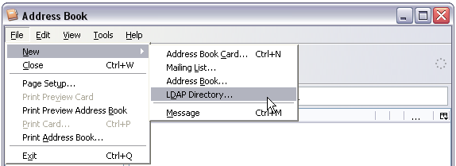
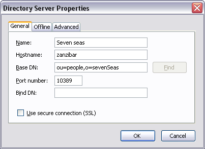
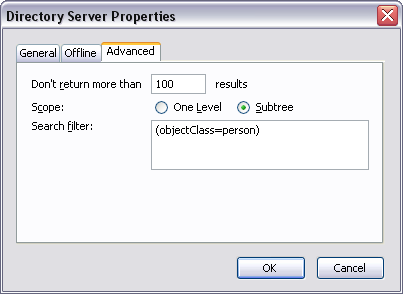
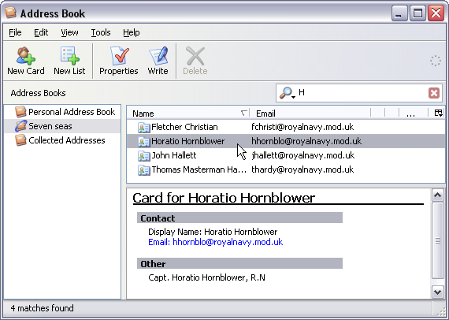

ApacheDS 2.0
Downloads
Documentation
- Basic User Guide
- Advanced User Guide
- Developer Guide
- Kerberos User Guide
- Configuration
- JavaDocs
- Cross-Reference
Support
Community
About Apache
4.1 - Mozilla Thunderbird Integration
In this section you will learn how to integrate Apache Directory Server into a mail client in order to use the data as an address book. Mozilla Thunderbird is used as an example.
E-Mail clients and Mozilla Thunderbird
Integrating an LDAP server in an E-Mail client is a very traditionally task, because directories are commonly used as user repositories within companies and organizations. Contact data is stored for all users of the enterprise, and it is quite common to build the companies online phone/address book on this directory. These address books are often web based application within the intranet. But many E-Mail clients allow to connect to an LDAP based directory directly and use its data as an address book. This seamless integration provides better user experience. One of these clients is Mozilla Thunderbird. Other E-Mail clients that support LDAP integration for address books include Microsoft Outlook Expess, Eudora Email and IBM Lotus Notes.
Technically, a mail program acts as a normal LDAP client, as described in earlier sections (i.e. the client connects to the server and performs LDAP search operations). Therefore the parameters you have to specify are the same. Main difference between searches with E-Mail clients and searches with LDAP Browsers like Softerra or JXplorer is that most of the complexity of the LDAP search is hidden to the user. Hence these tools are easier to use, but less powerful.
Mozilla Thunderbird
Mozilla Thunderbird is a popular open source E-Mail client which supports many platforms. Actually it is more than just an E-Mail client (e.g. a news client as well). Features include junk mail control and RSS reading. Learn more about this software at the projects Homepage: Mozilla Thunderbird.
Within this lesson we use Thunderbird primarily because of its broad support for different operation systems and hardware platforms (and because it allows the integration of LDAP servers as address books, of course). You may use other E-Mail clients as well. It is likely that that allow the integration of LDAP directories as well, and even that the configuration is similar to Thunderbird. Check your product documentation for details.
Prerequisites
We assume that you have Mozilla Thunderbird installed on your system (or you use another E-Mail client and are willing to assimilate the instructions to your situation). You may wish to download the software at the homepage (Mozilla Thunderbird) and install it, before proceed with this lesson. Furthermore you need an LDAP server up and running, which address data should be used as an address book within your E-Mail client. For the instructions it is assumed that you have installed Apache Directory Server as described in the first trail and loaded our sample data. To sum it up the following is assumed for the environment:
- Apache Directory runs on host zanzibar. LDAP and listens to port 10389
- Anonymous access to the directory is allowed
- Data is imported as described in section 2, Base DN is o=sevenSeas
You may use this lesson as a blueprint to integrate other directory servers as well. At least you need the data given above in bold.
Define Apache Directory Server as an address book
Open the address book
After starting Mozilla Thunderbird on your workstation, go to the address book by
- clicking the adress book icon or
- activation of the corresponding menu item (“Tools” – “Address Book”) or
- pressing Ctrl+2

Define a new LDAP directory
Within the adress book window open the dialog to define a new LDAP directory by
- activation of the corresponding menu item (“File” – “New” – “LDAP Directory…”)

Thunderbird opens a dialog with three tabbed panes to provide the data of the directory.
Provide connection data
Within the “General” tab, enter basic connection data to your directory:
- Name: A name which is used by Thunderbird within the UI, e.g. “Seven Seas”
- Hostname: the hostname or IP address of the server, “zanzibar” in our case
- Base DN: Search base for looking up people, we choose “ou=people,o=sevenSeas”
- Port number: The port the LDAP provider of Apache Directory Server is listening on, “10389” in our case

In this example we do not provide a Bind DN but let Thunderbird look up the users within our directory anonymously. Apache Directory Server should be appropriately configured for that, or you have to provide a user here.
The advance tab of the dialog provides input fields for result set limits, search scope and search filter. In our example we perform a search with subtree scope and a maximum number of 100 entries within the result set. The search filter restricts the results to person entries only.

You probably have noticed that the input fields in the two tabbed panes corresponds exactly to the parameters for an LDAP search operation as described in lesson [Search the directory] of this trail.
Searching your new address book

Resources
- An introduction to Thunderbird, Open Source Articles
- LDAP Attribute Mapping for Mozilla Thunderbird